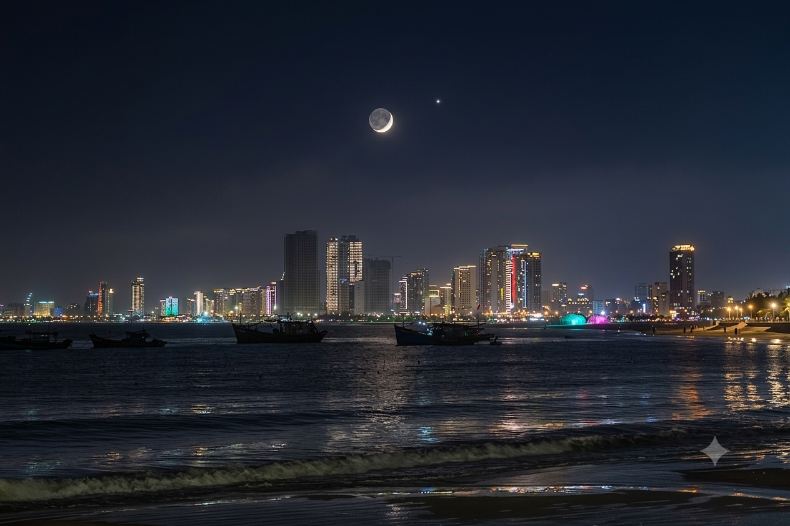

Đà Nẵng nằm bên bờ sông Hàn, nổi bật với những cây cầu độc đáo như Cầu Rồng phun lửa và phun nước, hay Cầu Sông Hàn quay vào giữa đêm. Thành phố còn hấp dẫn du khách với Bà Nà Hills trên núi và bán đảo Sơn Trà xanh mát.
Mỗi tối cuối tuần, người dân và du khách lại tập trung hai bên bờ sông để chiêm ngưỡng Cầu Rồng phun lửa, phun nước. Bên cạnh đó, ẩm thực miền Trung với mì Quảng, bánh xèo và hải sản tươi ngon cũng góp phần tạo nên sức hấp dẫn riêng của Đà Nẵng – một trong những thành phố đáng sống nhất Việt Nam.